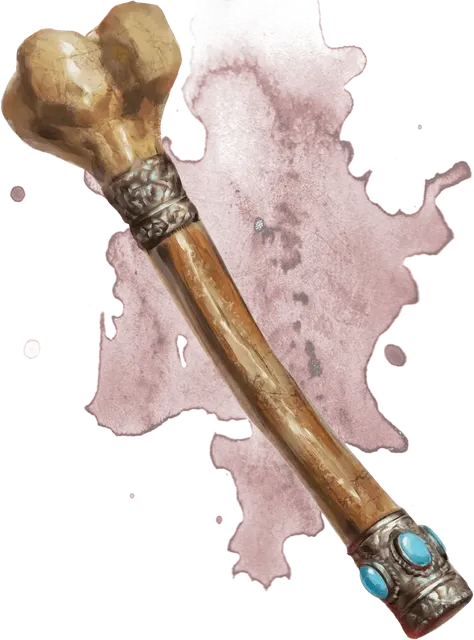

Бедренная кость святой Марковии
Saint Markovia’s Thighbone
Оружие (булава), редкое (требуется настройка)

Рекомендованная стоимость 501-5 000 зм
Бедренная кость святой Марковии обладает свойствами булавы распада [mace of disruption]. Если ею будут нанесёны один или несколько ударов по вампиру [vampire] или порождению вампира [vampire spawn] во время одной битвы, бедренная кость рассыпается в прах, как только битва подходит к концу.
В юности Марковия, последовав зову сердца, стала священницей Утреннего бога вскоре после своего восемнадцатилетия. Она показала себя харизматичной проповедницей и к тридцати годам обладала репутацией той, перед которой не устоять никакому злу.
Марковия долгое время считала Страда безумным тираном, но лишь после его обращения в вампира решилась выступить против него. Когда она уже собрала своих последователей и приготовилась выступить в поход на замок Равенлофт, Страд отправил группу порождений вампира к ней в аббатство. Они выступили против Марковии и были уничтожены все до единого.
Праведная победа зажгла её уверенность, и Марковия направилась в замок Равенлофт. Великая битва бушевала от катакомб до парапетов. В итоге Марковия так и не вернулась в Баровию, а Страд долгое время хромал, скалясь от боли. Говорят, что он запер Марковию в крипте под замком, и её останки лежат там и по сей день.
Хотя её тело истлело, частичка святости Марковии перешла в её кости. Уцелевшая бедренная кость наделена силой наносить Нежити ужасающие ранения.